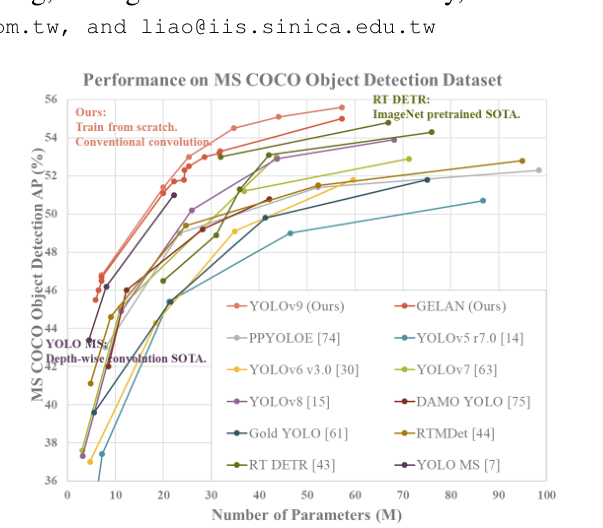
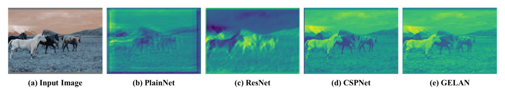
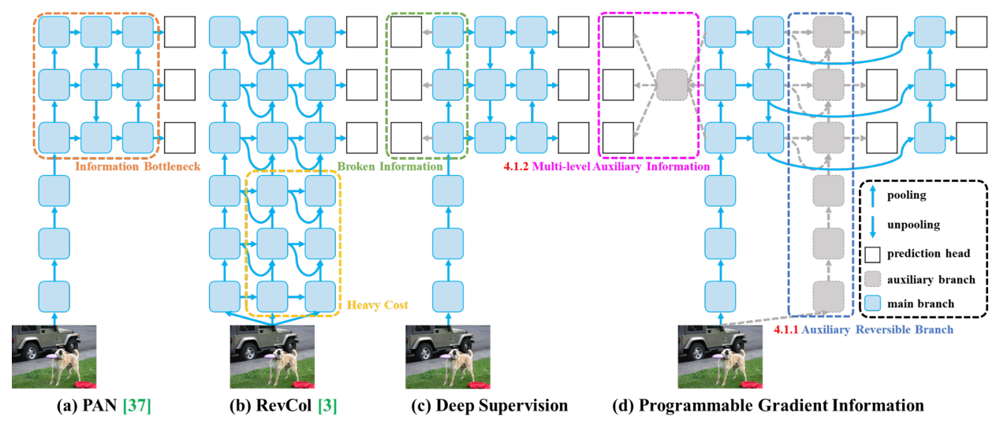
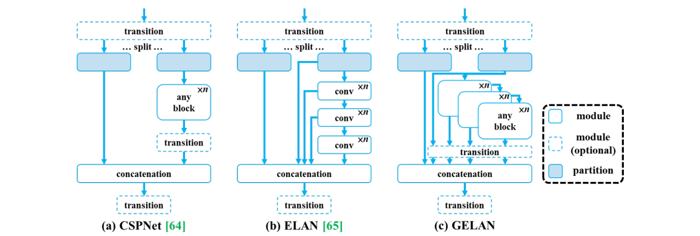
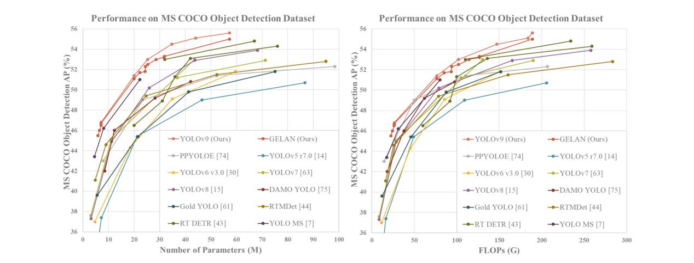
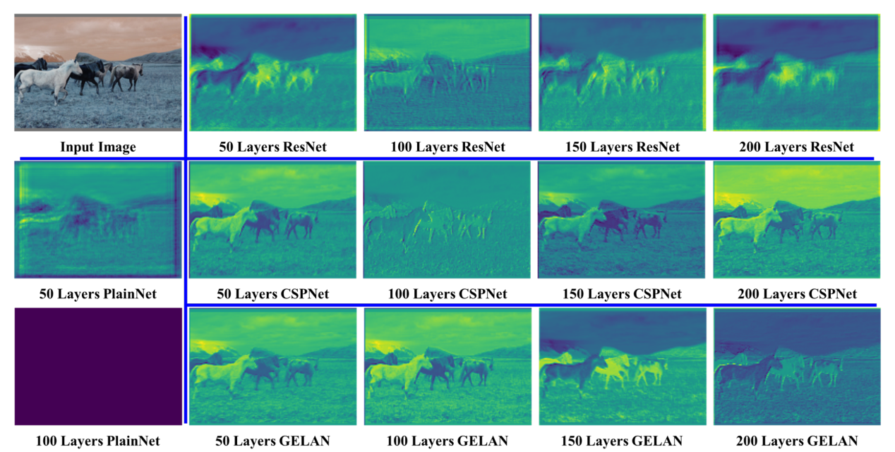
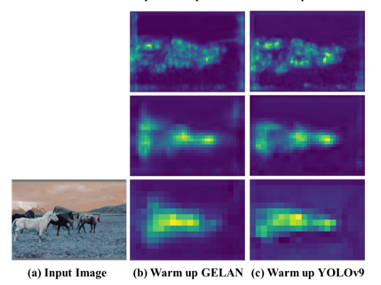

YOLOv9: 프로그래밍 가능한 그래디언트 정보(PGI)를 활용한 원하는 바의 학습
YOLOv9: Learning What You Want to Learn Using Programmable Gradient Information
YOLOv9은 심층 신경망의 순전파(feedforward) 과정에서 입력 데이터의 정보가 소실되는 정보 병목(Information Bottleneck) 현상을 규명하고, 이를 해결하기 위한 프로그래밍 가능한 그래디언트 정보(PGI, Programmable Gradient Information) 프레임워크와 그래디언트 경로 계획 기반의 경량 아키텍처 GELAN(Generalized Efficient Layer Aggregation Network)을 제안한 실시간 객체 탐지 모델입니다.
- 문제 의식 (정보 병목): 심층 신경망을 거치며 특징 추출 및 공간 변환이 반복될수록 목표 과업에 필요한 입력 정보가 손실되어 편향되고 신뢰할 수 없는 그래디언트가 생성되며, 기존 심층 지도(deep supervision) 방식은 경량 모델에서 오히려 성능 저하를 유발합니다.
- PGI (Programmable Gradient Information): 추론 시에는 주 분기(main branch)만 사용하여 추가 연산 비용이 전혀 없으며, 학습 시에만 보조 가역 분기(auxiliary reversible branch)와 다중 수준 보조 정보(multi-level auxiliary information)를 활용해 주 분기에 완전하고 신뢰할 수 있는 그래디언트를 공급합니다.
- GELAN 아키텍처: CSPNet과 ELAN을 결합·일반화하여 일반 합성곱(conventional convolution)만으로도 깊이별 합성곱(depth-wise convolution) 기반 최신 기법보다 뛰어난 파라미터 효율과 정확도·속도의 균형을 달성하며, 임의의 연산 블록을 자유롭게 조합할 수 있습니다.
- 주요 성능 (MS COCO 2017 val, 처음부터 학습): YOLOv9-C는 YOLOv7 AF 대비 파라미터 42%, 연산량(FLOPs) 22%를 절감하면서 동일한 53.0% AP를 달성했고, YOLOv9-E는 YOLOv8-X 대비 파라미터 16%, 연산량 27%를 줄이면서도 AP를 1.7%p 향상시켜 55.6% AP(AP50 72.8%)를 기록했습니다. 또한 대규모 데이터셋으로 사전 학습된 RT-DETR-X와 비교해도 약 66% 수준의 파라미터만으로 이를 상회하는 정확도를 보였습니다.
초록 (Abstract)
오늘날의 딥러닝 방법론은 모델의 예측 결과가 정답(ground truth)에 최대한 가까워지도록 가장 적절한 목적 함수(objective function)를 설계하는 데 초점을 맞추고 있습니다. 이와 동시에 예측에 필요한 충분한 정보를 획득할 수 있도록 돕는 적절한 네트워크 아키텍처 역시 설계되어야 합니다. 그러나 기존 방법들은 입력 데이터가 계층별 특징 추출(feature extraction)과 공간 변환(spatial transformation)을 거칠 때 막대한 양의 정보가 손실된다는 사실을 간과하고 있습니다.
본 논문은 데이터가 심층 신경망을 통과할 때 발생하는 데이터 손실이라는 중요한 문제, 즉 정보 병목(information bottleneck)과 가역 함수(reversible function)를 심층적으로 탐구합니다. 우리는 심층 신경망이 다중 목적(multiple objectives)을 달성하기 위해 요구되는 다양한 변화에 대응할 수 있도록 프로그래밍 가능한 그래디언트 정보(PGI, Programmable Gradient Information)라는 개념을 제안합니다. PGI는 목적 함수를 계산하는 데 필요한 완전한 입력 정보를 목표 과업에 제공함으로써, 네트워크 가중치를 업데이트하기 위한 신뢰할 수 있는 그래디언트 정보를 얻을 수 있게 합니다.
또한, 그래디언트 경로 계획(gradient path planning)을 기반으로 한 새로운 경량 네트워크 아키텍처인 일반화된 효율적 계층 집계 네트워크(GELAN, Generalized Efficient Layer Aggregation Network)를 설계하였습니다. GELAN의 아키텍처는 PGI가 경량 모델에서도 탁월한 성과를 거둠을 입증합니다. 제안된 GELAN과 PGI는 MS COCO 데이터셋 기반 객체 탐지 과업을 통해 검증되었습니다. 실험 결과, GELAN은 일반 합성곱 연산자(conventional convolution operators)만을 사용하고도 깊이별 합성곱(depth-wise convolution)을 기반으로 개발된 최신(state-of-the-art) 방법론들보다 더 우수한 파라미터 활용도를 달성했습니다. PGI는 경량 모델부터 대형 모델까지 다양한 규모의 모델에 폭넓게 적용될 수 있으며, 완전한 정보를 확보함으로써 처음부터 학습(train-from-scratch)한 모델이 대규모 데이터셋으로 사전 학습(pre-trained)된 최신 모델들보다 더 나은 성능을 달성하도록 만듭니다. 비교 결과는 그림 1에 제시되어 있으며, 소스 코드는 https://github.com/WongKinYiu/yolov9에서 공개되어 있습니다.

1. 서론 (Introduction)
딥러닝 기반 모델은 컴퓨터 비전, 언어 처리, 음성 인식 등 다양한 분야에서 과거의 인공지능 시스템보다 월등히 뛰어난 성능을 입증해 왔습니다. 최근 몇 년간 딥러닝 분야의 연구자들은 주로 CNN [21–23, 42, 55, 71, 72], 트랜스포머(Transformers) [8, 9, 40, 41, 60, 69, 70], 퍼시버(Perceivers) [26, 32, 52, 56, 81], 맘바(Mambas) [17, 38, 80]와 같이 더욱 강력한 시스템 아키텍처와 학습 방법을 개발하는 데 주력해 왔습니다. 또한 일부 연구자들은 손실 함수(loss function) [5, 45, 46, 50, 77, 78], 레이블 할당(label assignment) [10, 12, 33, 67, 79], 보조 지도(auxiliary supervision) [18, 20, 24, 28, 29, 51, 54, 68, 76] 등 보다 범용적인 목적 함수를 개발하고자 노력해 왔습니다. 이러한 연구들은 모두 입력과 목표 과업 간의 매핑(mapping)을 정밀하게 찾아내는 것을 목표로 합니다.
하지만 과거의 대부분 접근법은 입력 데이터가 순전파(feedforward) 과정에서 무시할 수 없을 만큼 많은 정보 손실을 겪는다는 점을 간과했습니다. 이러한 정보 손실은 편향된 그래디언트 흐름(biased gradient flows)을 초래하며, 이 편향된 그래디언트가 결국 모델을 업데이트하는 데 사용됩니다. 위 문제들로 인해 심층 신경망은 목표와 입력 사이에 잘못된 연관성(incorrect associations)을 학습하게 되고, 결과적으로 학습된 모델이 부정확한 예측을 내놓게 됩니다.

심층 신경망에서 입력 데이터가 순전파 과정 중 정보를 잃어버리는 현상은 일반적으로 정보 병목(information bottleneck) [59]으로 알려져 있으며, 그 개략적인 양상은 그림 2와 같습니다. 현재 이 현상을 완화할 수 있는 주요 방법들은 다음과 같습니다.
- (1) 가역 아키텍처(reversible architectures) 사용 [3, 16, 19]: 이 방법은 주로 입력 데이터를 반복적으로 전달하여 명시적인 방식으로 입력 데이터의 정보를 유지합니다.
- (2) 마스크드 모델링(masked modeling) 사용 [1, 6, 9, 27, 71, 73]: 주로 재구성 손실(reconstruction loss)을 활용하고 암묵적인 방식을 통해 추출된 특징을 최대화하여 입력 정보를 보존합니다.
- (3) 심층 지도(deep supervision) 개념 도입 [28, 51, 54, 68]: 중요한 정보를 아직 많이 잃지 않은 얕은 계층(shallow features)의 특징을 이용해 특징에서 목표로의 매핑을 사전에 구축함으로써, 중요한 정보가 더 깊은 계층으로 전달될 수 있도록 보장합니다.
그러나 위 방법들은 학습 과정과 추론 과정에서 각기 다른 단점을 지닙니다. 예를 들어, 가역 아키텍처는 반복적으로 입력되는 데이터를 결합하기 위한 추가 계층이 필요하므로 추론 비용(inference cost)이 크게 증가합니다. 또한 입력 데이터 계층에서 출력 계층까지의 경로가 너무 깊어질 수 없다는 제약 때문에, 학습 과정에서 고차원 의미 정보(high-order semantic information)를 모델링하기가 어렵습니다. 마스크드 모델링의 경우, 재구성 손실이 때때로 목표 과업의 손실(target loss)과 충돌하며 대부분의 마스크 메커니즘이 데이터와의 잘못된 연관성을 형성하기도 합니다. 심층 지도 메커니즘은 오차 누적(error accumulation)을 유발하며, 만약 학습 과정에서 얕은 계층의 지도가 정보를 잃어버리면 이후의 깊은 계층들이 필요한 정보를 되찾을 수 없게 됩니다. 이러한 현상은 난이도가 높은 과업과 소형 모델에서 더욱 두드러지게 나타납니다.
앞서 언급한 문제들을 해결하기 위해 우리는 새로운 개념인 프로그래밍 가능한 그래디언트 정보(PGI, Programmable Gradient Information)를 제안합니다. 이 개념의 핵심은 보조 가역 분기(auxiliary reversible branch)를 통해 신뢰할 수 있는 그래디언트를 생성함으로써, 깊은 계층의 특징들도 목표 과업을 수행하기 위한 핵심 특성을 여전히 유지할 수 있도록 만드는 것입니다. 보조 가역 분기의 설계는 다중 경로 특징을 통합하는 전통적인 심층 지도 과정에서 발생할 수 있는 의미 정보 손실(semantic loss)을 방지할 수 있습니다. 다시 말해, 서로 다른 의미 수준(semantic levels)에서의 그래디언트 정보 전파를 프로그래밍함으로써 최적의 학습 결과를 달성하는 것입니다. PGI의 가역 아키텍처는 보조 분기 위에 구축되므로 추론 시 추가 비용이 발생하지 않습니다. 또한 PGI는 목표 과업에 적합한 손실 함수를 자유롭게 선택할 수 있으므로 마스크드 모델링이 겪는 문제도 극복합니다. 제안된 PGI 메커니즘은 다양한 크기의 심층 신경망에 적용 가능하며, 매우 깊은 신경망에만 적합했던 기존 심층 지도 메커니즘보다 훨씬 범용적입니다.
본 논문에서는 또한 ELAN [65]을 기반으로 일반화된 ELAN(GELAN, Generalized ELAN)을 설계했습니다. GELAN의 설계는 파라미터 수, 계산 복잡도, 정확도, 그리고 추론 속도를 동시에 고려합니다. 이 설계를 통해 사용자는 다양한 추론 장치(inference devices)에 맞춰 적절한 연산 블록을 자유롭게 선택할 수 있습니다. 우리는 제안된 PGI와 GELAN을 결합하여 차세대 YOLO 계열 객체 탐지 시스템인 YOLOv9을 설계했습니다. MS COCO 데이터셋을 이용해 실험을 수행한 결과, 제안한 YOLOv9이 모든 비교 대상에서 최고 성능을 달성함을 입증했습니다.
본 논문의 주요 기여는 다음과 같이 요약됩니다.
- 기존 심층 신경망 아키텍처를 가역 함수(reversible function)의 관점에서 이론적으로 분석하였으며, 이 과정을 통해 과거에는 설명하기 어려웠던 많은 현상들을 성공적으로 규명했습니다. 또한 이 분석을 바탕으로 PGI와 보조 가역 분기를 설계하여 탁월한 성능을 달성했습니다.
- 우리가 설계한 PGI는 심층 지도가 극단적으로 깊은 신경망 아키텍처에만 사용될 수 있다는 한계를 해결하여, 새로운 경량 아키텍처들이 실생활에 실질적으로 적용될 수 있도록 했습니다.
- 우리가 설계한 GELAN은 일반 합성곱만 사용하고도 최첨단 기술 기반의 깊이별 합성곱 설계보다 높은 파라미터 활용도를 달성했으며, 가볍고 빠르면서도 정확한 큰 장점을 보여줍니다.
- 제안한 PGI와 GELAN을 결합함으로써, MS COCO 데이터셋에서 YOLOv9의 객체 탐지 성능은 모든 측면에서 기존의 실시간 객체 탐지기들을 크게 능가합니다.
2. 관련 연구 (Related Work)
2.1. 실시간 객체 탐지기 (Real-time Object Detectors)
현재 주류를 이루는 실시간 객체 탐지기는 YOLO 시리즈 [2, 7, 13–15, 25, 30, 31, 47–49, 61–63, 74, 75]이며, 이들 모델의 대부분은 CSPNet [64]이나 ELAN [65] 및 그 변형들을 주요 연산 단위로 사용합니다. 특징 통합(feature integration) 측면에서는 개선된 PAN [37]이나 FPN [35]이 자주 활용되며, 예측 헤드(prediction head)로는 개선된 YOLOv3 헤드 [49] 또는 FCOS 헤드 [57, 58]가 사용됩니다. 최근에는 DETR [4]을 기반으로 한 RT-DETR [43]과 같은 실시간 객체 탐지기들도 제안되었습니다. 그러나 DETR 계열 객체 탐지기는 해당 도메인에 맞는 사전 학습 모델이 없으면 새로운 도메인에 적용하기가 극도로 어렵기 때문에, 현재 가장 널리 사용되는 실시간 객체 탐지기는 여전히 YOLO 시리즈입니다. 본 논문은 다양한 컴퓨터 비전 과업과 시나리오에서 효과가 입증된 YOLOv7 [63]을 기반으로 제안 방법을 개발합니다. 우리는 GELAN을 사용하여 아키텍처를 개선하고 제안된 PGI로 학습 과정을 강화했습니다. 이러한 참신한 접근법을 통해 제안된 YOLOv9을 차세대 최고의 실시간 객체 탐지기로 만들었습니다.
2.2. 가역 아키텍처 (Reversible Architectures)
가역 아키텍처 [3, 16, 19]의 연산 단위는 가역 변환(reversible conversion) 특성을 유지해야 하므로, 연산 단위의 각 계층이 출력하는 특징 맵이 완전한 원본 정보를 보존할 수 있도록 보장합니다. 이전에 RevCol [3]은 전통적인 가역 단위를 다중 수준(multiple levels)으로 일반화하여 서로 다른 계층 단위가 표현하는 의미 수준을 확장했습니다. 다양한 신경망 아키텍처에 대한 문헌 조사를 통해, 우리는 다양한 수준의 가역적 특성을 지닌 고성능 아키텍처가 다수 존재함을 확인했습니다. 예를 들어, Res2Net 모듈 [11]은 서로 다른 입력 분할(partition)을 계층적 방식으로 다음 분할과 결합한 뒤, 변환된 모든 분할을 연결(concatenate)하여 다음 단계로 전달합니다. CBNet [34, 39]은 복합 백본(composite backbone)을 통해 원본 입력 데이터를 재도입하여 완전한 원본 정보를 얻고, 다양한 결합 방식을 통해 여러 수준의 다중 수준 가역 정보를 획득합니다. 이러한 네트워크 아키텍처는 일반적으로 파라미터 활용도가 매우 뛰어나지만, 추가되는 복합 계층으로 인해 추론 속도가 느려집니다. DynamicDet [36]은 CBNet [34]과 고효율 실시간 객체 탐지기인 YOLOv7 [63]을 결합하여 속도, 파라미터 수, 정확도 간의 매우 우수한 절충안(trade-off)을 달성했습니다. 본 논문은 DynamicDet 아키텍처를 가역 분기 설계의 기반으로 도입하며, 나아가 가역 정보를 제안하는 PGI 내부로 통합합니다. 제안된 새로운 아키텍처는 추론 과정에서 추가 연결이 필요하지 않으므로 속도, 파라미터 양, 정확도의 이점을 온전히 유지할 수 있습니다.
2.3. 보조 지도 (Auxiliary Supervision)
심층 지도(deep supervision) [28, 54, 68]는 가장 흔한 보조 지도 방법으로서, 중간 계층에 추가 예측 계층을 삽입하여 학습을 수행합니다. 특히 트랜스포머 기반 방법에서 도입된 다층 디코더(multi-layer decoders) 적용이 가장 대표적인 예입니다. 또 다른 일반적인 보조 지도 방법은 관련 메타 정보(meta information)를 활용해 중간 계층에서 생성된 특징 맵을 유도하여 목표 과업이 요구하는 속성을 갖도록 만드는 것입니다 [18, 20, 24, 29, 76]. 이러한 유형의 예로는 객체 탐지기의 정확도를 높이기 위해 분할 손실(segmentation loss)이나 깊이 손실(depth loss)을 사용하는 경우가 있습니다. 최근에는 서로 다른 레이블 할당 방법을 사용해 다양한 보조 지도 메커니즘을 생성함으로써 모델의 수렴 속도를 높이고 동시에 강건성(robustness)을 향상시키는 연구들이 다수 보고되고 있습니다 [53, 67, 82]. 그러나 보조 지도 메커니즘은 일반적으로 대형 모델에만 적용 가능하며, 경량 모델에 적용할 경우 과소 매개변수화(under-parameterization) 현상을 유발하여 오히려 성능을 악화시키기 쉽습니다. 우리가 제안한 PGI는 다중 수준 의미 정보를 재프로그래밍하는 방식을 설계했으며, 이를 통해 경량 모델 역시 보조 지도 메커니즘의 혜택을 누릴 수 있습니다.
3. 문제 정의 (Problem Statement)
일반적으로 사람들은 심층 신경망의 수렴 난이도 문제를 그래디언트 소실(gradient vanish)이나 그래디언트 포화(gradient saturation) 같은 요인 때문이라고 여기며, 이러한 현상은 전통적인 심층 신경망에 실제로 존재합니다. 그러나 현대의 심층 신경망은 다양한 정규화(normalization) 기법과 활성화 함수(activation functions)를 설계함으로써 위 문제를 이미 근본적으로 해결했습니다. 그럼에도 불구하고 심층 신경망은 여전히 수렴 속도가 느리거나 수렴 결과가 좋지 않은 문제를 겪고 있습니다.
본 논문에서는 위 문제의 본질을 더욱 깊이 탐구합니다. 정보 병목(information bottleneck)에 대한 심층 분석을 통해, 우리는 이 문제의 근본 원인이 매우 깊은 네트워크에서 유래한 초기 그래디언트가 전달되는 즉시 목표 달성에 필요한 많은 정보를 잃어버린다는 데 있음을 도출했습니다. 이 추론을 검증하기 위해 서로 다른 아키텍처의 심층 네트워크에 초기 가중치를 적용해 순전파를 수행하고, 그 결과를 그림 2에 시각화하여 나타냈습니다. 명확하게도 PlainNet은 깊은 계층에서 객체 탐지에 필요한 중요한 정보를 대량으로 소실했습니다. 반면 ResNet, CSPNet, 그리고 GELAN이 보존할 수 있는 중요 정보의 비율은 실제로 학습 후 얻을 수 있는 정확도와 양의 상관관계를 보입니다. 우리는 이러한 문제의 원인을 해결하기 위해 가역 네트워크 기반의 방법론을 추가로 설계합니다. 본 절에서는 정보 병목 원리와 가역 함수에 대한 분석을 상세히 설명합니다.
3.1. 정보 병목 원리 (Information Bottleneck Principle)
정보 병목 원리에 따르면, 데이터 $X$는 변환 과정을 거칠 때 아래 식 (1)과 같이 정보 손실을 겪을 수 있습니다.
$$I(X, X) \ge I(X, f_\theta(X)) \ge I(X, g_\phi(f_\theta(X))) \tag{1}$$여기서 $I$는 상호 정보량(mutual information)을 나타내며, $f$와 $g$는 변환 함수이고 $\theta$와 $\phi$는 각각 $f$와 $g$의 파라미터입니다.
심층 신경망에서 $f_\theta(\cdot)$와 $g_\phi(\cdot)$는 각각 심층 신경망 내 연속된 두 계층의 연산을 의미합니다. 식 (1)로부터 네트워크 계층이 깊어질수록 원본 데이터가 소실될 가능성이 커진다는 것을 예측할 수 있습니다. 그러나 심층 신경망의 파라미터는 네트워크의 출력과 주어진 목표(target)를 바탕으로 손실 함수를 계산해 새로운 그래디언트를 생성한 뒤 업데이트됩니다. 짐작할 수 있듯이, 더 깊은 신경망의 출력일수록 예측 목표에 대한 완전한 정보를 보존하는 능력이 떨어집니다. 이로 인해 네트워크 학습 과정에서 불완전한 정보가 사용될 가능성이 높아지며, 결과적으로 신뢰할 수 없는 그래디언트와 저조한 수렴을 초래합니다.
위 문제를 해결하는 한 가지 방법은 모델의 크기를 직접 키우는 것입니다. 많은 수의 파라미터로 모델을 구축하면 데이터에 대해 보다 완전한 변환을 수행할 수 있는 능력이 커집니다. 이러한 접근 방식은 데이터 순전파 과정에서 일부 정보가 손실되더라도 목표로의 매핑을 수행할 만큼 충분한 정보를 유지할 가능성을 열어줍니다. 이 현상은 현대의 대부분 모델에서 왜 깊이(depth)보다 너비(width)가 더 중요한지를 설명해 줍니다. 하지만 이 결론 역시 매우 깊은 신경망에서 발생하는 신뢰할 수 없는 그래디언트 문제를 근본적으로 해결할 수는 없습니다. 아래에서는 가역 함수를 사용하여 문제를 해결하는 방법과 관련 분석을 소개합니다.
3.2. 가역 함수 (Reversible Functions)
어떤 함수 $r$이 역변환 함수(inverse transformation function) $v$를 가질 때, 식 (2)와 같이 이 함수를 가역 함수(reversible function)라고 부릅니다.
$$X = v_\zeta(r_\psi(X)) \tag{2}$$여기서 $\psi$와 $\zeta$는 각각 $r$과 $v$의 파라미터입니다. 데이터 $X$는 식 (3)과 같이 정보 손실 없이 가역 함수에 의해 변환됩니다.
$$I(X, X) = I(X, r_\psi(X)) = I(X, v_\zeta(r_\psi(X))) \tag{3}$$네트워크의 변환 함수가 가역 함수들로 구성되면 모델을 업데이트하기 위한 더욱 신뢰할 수 있는 그래디언트를 얻을 수 있습니다. 오늘날 인기 있는 거의 모든 딥러닝 기법들은 식 (4)와 같이 가역적 속성(reversible property)에 부합하는 아키텍처를 따릅니다.
$$X^{l+1} = X^l + f_\theta^{l+1}(X^l) \tag{4}$$여기서 $l$은 PreAct ResNet의 $l$번째 계층을 가리키며, $f$는 해당 계층의 변환 함수입니다. PreAct ResNet [22]은 명시적인 방식으로 원본 데이터 $X$를 후속 계층에 반복적으로 전달합니다. 비록 이러한 설계가 1,000개 이상의 계층을 가진 심층 신경망도 매우 잘 수렴하도록 만들 수 있지만, 우리가 심층 신경망을 필요로 하는 중요한 이유를 훼손합니다. 즉, 어려운 문제의 경우 데이터를 목표에 매핑하는 단순한 매핑 함수를 직접 찾기가 어렵다는 점입니다. 이는 또한 계층 수가 적을 때 왜 PreAct ResNet이 일반 ResNet [21]보다 성능이 떨어지는지를 설명해 줍니다.
또한 우리는 트랜스포머 모델이 중대한 돌파구를 마련할 수 있게 했던 마스크드 모델링(masked modeling)을 활용하는 방안도 검토했습니다. 식 (5)와 같은 근사 방법을 사용하여 $r$의 역변환 $v$를 찾고, 이를 통해 변환된 특징들이 희소 특징(sparse features)을 사용하면서도 충분한 정보를 보존하도록 시도합니다. 식 (5)의 형태는 다음과 같습니다.
$$X = v_\zeta(r_\psi(X) \cdot M) \tag{5}$$여기서 $M$은 동적 이진 마스크(dynamic binary mask)입니다. 위 과업을 수행하는 데 흔히 쓰이는 다른 방법으로는 확산 모델(diffusion model)과 변이형 오토인코더(variational autoencoder)가 있으며, 두 방법 모두 역함수를 찾는 기능을 갖추고 있습니다. 그러나 위 접근법을 경량 모델에 적용하면 결함이 발생합니다. 경량 모델은 방대한 양의 원시 데이터(raw data)에 비해 과소 매개변수화(under-parameterized)되어 있기 때문입니다. 이러한 이유로 데이터 $X$를 목표 $Y$에 매핑하는 핵심 정보 $I(Y, X)$ 역시 동일한 문제에 직면하게 됩니다. 이 문제를 규명하기 위해 우리는 정보 병목 개념 [59]을 사용하며, 정보 병목의 수식은 다음과 같습니다.
$$I(X, X) \ge I(Y, X) \ge I(Y, f_\theta(X)) \ge \dots \ge I(Y, \hat{Y}) \tag{6}$$일반적으로 $I(Y, X)$는 전체 $I(X, X)$에서 극히 작은 부분만을 차지합니다. 그럼에도 불구하고 목표 임무(target mission)에는 결정적인 역할을 합니다. 따라서 순전파 단계에서 손실되는 정보의 양이 크지 않더라도 $I(Y, X)$가 침해받기만 하면 학습 효과에 막대한 타격이 발생합니다. 경량 모델은 그 자체로 과소 매개변수화 상태에 놓여 있으므로 순전파 단계에서 많은 중요 정보를 잃기 쉽습니다. 그러므로 경량 모델에 대한 우리의 목표는 $I(X, X)$로부터 $I(Y, X)$를 얼마나 정확하게 걸러내느냐에 있습니다. 반면 $X$의 모든 정보를 온전히 보존하는 것은 달성하기 어렵습니다. 이상의 분석을 토대로, 우리는 모델을 업데이트할 신뢰할 수 있는 그래디언트를 생성할 뿐만 아니라 얕고 가벼운 신경망에도 적합한 새로운 심층 신경망 학습 방법을 제안하고자 합니다.
4. 방법론 (Methodology)
4.1. 프로그래밍 가능한 그래디언트 정보 (Programmable Gradient Information)
앞서 언급한 문제들을 해결하기 위해 우리는 그림 3(d)와 같이 프로그래밍 가능한 그래디언트 정보(PGI, Programmable Gradient Information)라는 새로운 보조 지도 프레임워크를 제안합니다. PGI는 크게 (1) 주 분기(main branch), (2) 보조 가역 분기(auxiliary reversible branch), (3) 다중 수준 보조 정보(multi-level auxiliary information)의 세 가지 구성 요소로 이루어져 있습니다. 그림 3(d)에서 볼 수 있듯이 PGI의 추론 과정은 오직 주 분기만을 사용하므로 어떠한 추가 추론 비용도 요구하지 않습니다. 나머지 두 구성 요소는 딥러닝 방법론의 여러 중요 이슈를 해결하거나 완화하는 데 사용됩니다. 그중 보조 가역 분기는 신경망의 심화로 인해 발생하는 문제를 다루기 위해 설계되었습니다. 네트워크의 심화는 정보 병목을 야기하여 손실 함수가 신뢰할 수 있는 그래디언트를 생성하지 못하게 만듭니다. 한편 다중 수준 보조 정보는 심층 지도로 인해 발생하는 오차 누적 문제를 처리하기 위해 설계되었으며, 특히 다중 예측 분기(multiple prediction branch)를 갖는 아키텍처와 경량 모델에 효과적입니다. 다음으로 이 두 구성 요소를 단계별로 자세히 소개합니다.

4.1.1. 보조 가역 분기 (Auxiliary Reversible Branch)
PGI에서 우리는 신뢰할 수 있는 그래디언트를 생성하고 네트워크 파라미터를 업데이트하기 위해 보조 가역 분기를 제안합니다. 데이터에서 목표로 매핑되는 정보를 제공함으로써, 손실 함수는 목표와 관련성이 낮은 불완전한 순전파 특징으로부터 잘못된 상관관계(false correlations)를 찾아낼 가능성을 피하고 올바른 안내를 제공할 수 있습니다. 우리는 가역 아키텍처를 도입하여 완전한 정보를 유지하도록 제안하지만, 주 분기에 가역 아키텍처를 직접 추가하면 막대한 추론 비용이 소모됩니다. 그림 3(b)의 아키텍처를 분석한 결과, 깊은 계층에서 얕은 계층으로 이어지는 추가 연결을 도입하면 추론 시간이 20% 증가하는 것으로 나타났습니다. 나아가 입력 데이터를 네트워크의 고해상도 연산 계층(노란색 상자)에 반복적으로 추가할 경우 추론 시간은 2배 이상으로 늘어납니다.
우리의 목표는 신뢰할 수 있는 그래디언트를 얻기 위해 가역 아키텍처를 사용하는 것이므로, 추론 단계에서 '가역성(reversible)'이 반드시 필요한 유일한 조건은 아닙니다. 이러한 관점에서 우리는 가역 분기를 심층 지도 분기의 확장으로 간주하고 그림 3(d)와 같은 보조 가역 분기를 설계했습니다. 정보 병목으로 인해 중요한 정보를 잃어버릴 뻔한 주 분기의 깊은 특징들은 보조 가역 분기로부터 신뢰할 수 있는 그래디언트 정보를 전달받을 수 있게 됩니다. 이 그래디언트 정보는 파라미터 학습을 구동하여 정확하고 중요한 정보를 추출하도록 보조하며, 결과적으로 주 분기가 목표 과업에 더욱 효과적인 특징을 획득할 수 있게 합니다. 게다가 가역 아키텍처는 복잡한 과업이 더 깊은 네트워크에서의 변환을 요구하기 때문에 얕은 네트워크에서 일반 네트워크보다 성능이 떨어지는 경향이 있습니다. 반면 제안된 방법은 주 분기가 완전한 원본 정보를 강제로 유지하도록 하지 않고, 보조 지도 메커니즘을 통해 유용한 그래디언트를 생성하여 주 분기를 업데이트합니다. 이러한 설계의 장점은 제안 방법이 더 얕은 네트워크에도 적용될 수 있다는 점입니다.
마지막으로, 보조 가역 분기는 추론 단계에서 제거할 수 있으므로 기존 네트워크의 추론 능력을 그대로 보존할 수 있습니다. 또한 PGI에서는 어떠한 가역 아키텍처든 선택하여 보조 가역 분기의 역할을 수행하도록 할 수 있습니다.
4.1.2. 다중 수준 보조 정보 (Multi-level Auxiliary Information)
본 절에서는 다중 수준 보조 정보가 어떻게 작동하는지 논의합니다. 다중 예측 분기를 포함하는 심층 지도 아키텍처는 그림 3(c)에 나타나 있습니다. 객체 탐지에서 서로 다른 특징 피라미드(feature pyramids)는 서로 다른 과업을 수행하는 데 사용될 수 있으며, 예를 들어 함께 협력하여 서로 다른 크기의 객체를 탐지합니다. 따라서 심층 지도 분기에 연결된 후, 얕은 특징은 소형 객체 탐지에 필요한 특징을 학습하도록 유도되며 이때 시스템은 다른 크기의 객체 위치들을 배경(background)으로 간주하게 됩니다. 하지만 이러한 작동 방식은 깊은 특징 피라미드가 목표 객체를 예측하는 데 필요한 많은 정보를 잃어버리게 만듭니다. 이 문제에 대해 우리는 각 특징 피라미드가 모든 목표 객체에 관한 정보를 전달받아야만 후속 주 분기가 다양한 목표에 대한 예측을 학습할 수 있는 완전한 정보를 보존할 수 있다고 판단했습니다.
다중 수준 보조 정보의 개념은 그림 3(d)와 같이 보조 지도의 특징 피라미드 계층 구조와 주 분기 사이에 통합 네트워크(integration network)를 삽입하고, 이를 사용하여 서로 다른 예측 헤드로부터 반환된 그래디언트를 결합하는 것입니다. 그런 다음 다중 수준 보조 정보는 모든 목표 객체를 포함하는 그래디언트 정보를 집계하여 주 분기로 전달하고 파라미터를 업데이트합니다. 이때 주 분기의 특징 피라미드 계층 구조의 특성은 특정 객체의 정보에만 지배되지 않게 됩니다. 결과적으로 우리의 방법은 심층 지도에서 발생하는 정보 단절(broken information) 문제를 완화할 수 있습니다. 또한 다중 수준 보조 정보에는 어떠한 통합 네트워크든 사용할 수 있습니다. 따라서 서로 다른 크기의 네트워크 아키텍처 학습을 유도하기 위해 필요한 의미 수준을 유연하게 계획(plan)할 수 있습니다.
4.2. 일반화된 ELAN (Generalized ELAN)
본 절에서는 제안하는 새로운 네트워크 아키텍처인 GELAN을 설명합니다. 그래디언트 경로 계획(gradient path planning)으로 설계된 두 신경망 아키텍처인 CSPNet [64]과 ELAN [65]을 결합하여, 경량화(lightweight), 추론 속도, 그리고 정확도를 모두 고려한 일반화된 효율적 계층 집계 네트워크(GELAN)를 설계했습니다. 전체 아키텍처는 그림 4에 나와 있습니다. 우리는 본래 합성곱 계층의 적층(stacking)만을 사용하던 ELAN [65]의 기능을 확장하여 임의의 연산 블록(computational blocks)을 사용할 수 있는 새로운 아키텍처로 일반화했습니다.

5. 실험 (Experiments)
5.1. 실험 설정 (Experimental Setup)
제안된 방법론은 MS COCO 데이터셋을 사용하여 검증하였습니다. 모든 실험 설정은 YOLOv7 AF [63]를 따르며, 데이터셋은 MS COCO 2017 분할(split)을 사용합니다. 언급된 모든 모델은 사전 학습 없이 처음부터 학습(train-from-scratch)하는 전략으로 학습되었으며, 총 학습 에폭(epoch) 수는 500입니다. 학습률(learning rate) 설정에서는 처음 3 에폭 동안 선형 웜업(linear warm-up)을 적용하고, 이후 에폭에서는 모델 규모에 맞는 감쇠(decay) 방식을 적용합니다. 마지막 15 에폭에서는 모자이크(mosaic) 데이터 증강을 끕니다. 보다 자세한 설정은 부록(Appendix)을 참조하시기 바랍니다.
5.2. 구현 세부 사항 (Implementation Details)
우리는 각각 YOLOv7 [63]과 Dynamic YOLOv7 [36]을 기반으로 YOLOv9의 일반 버전(general version)과 확장 버전(extended version)을 구축했습니다. 네트워크 아키텍처 설계에서는 ELAN [65]을 계획된 RepConv(planned RepConv) [63]가 적용된 CSPNet 블록 [64]을 연산 블록으로 사용하는 GELAN으로 교체했습니다. 또한 다운샘플링(downsampling) 모듈을 단순화하고 앵커 프리(anchor-free) 예측 헤드를 최적화했습니다. PGI의 보조 손실(auxiliary loss) 부분은 YOLOv7의 보조 헤드 설정을 그대로 따랐습니다. 보다 자세한 내용은 부록을 참조하시기 바랍니다.
5.3. 최신 기법과의 비교 (Comparison with State-of-the-Arts)
표 1은 제안하는 YOLOv9과 다른 처음부터 학습(train-from-scratch) 기반 실시간 객체 탐지기들의 비교 결과를 보여줍니다. 전반적으로 기존 방법 중 가장 우수한 성능을 보인 모델은 경량 모델에서는 YOLO MS-S [7], 중간 모델에서는 YOLO MS [7], 일반 모델에서는 YOLOv7 AF [63], 대형 모델에서는 YOLOv8-X [15]입니다. 경량 및 중간 모델인 YOLO MS [7]와 비교했을 때, YOLOv9은 파라미터 수가 약 10% 적고 연산량도 5~15% 적으면서도 AP는 0.4~0.6% 향상되었습니다. YOLOv7 AF와 비교하면, YOLOv9-C는 파라미터가 42%, 연산량이 22% 적으면서도 동일한 AP(53.0%)를 달성합니다. YOLOv8-X와 비교할 때, YOLOv9-E는 파라미터가 16%, 연산량이 27% 적으면서도 AP가 1.7% 크게 향상되었습니다. 이상의 비교 결과는 제안하는 YOLOv9이 모든 측면에서 기존 방법들보다 획기적으로 개선되었음을 입증합니다.
| 모델 (Model) | 파라미터 수 (M) | FLOPs (G) | $\text{AP}^{\text{val}}_{50:95}$ (%) | $\text{AP}^{\text{val}}_{50}$ (%) | $\text{AP}^{\text{val}}_{75}$ (%) | $\text{AP}^{\text{val}}_{S}$ (%) | $\text{AP}^{\text{val}}_{M}$ (%) | $\text{AP}^{\text{val}}_{L}$ (%) |
|---|---|---|---|---|---|---|---|---|
| YOLOv5-N r7.0 [14] | 1.9 | 4.5 | 28.0 | 45.7 | – | – | – | – |
| YOLOv5-S r7.0 [14] | 7.2 | 16.5 | 37.4 | 56.8 | – | – | – | – |
| YOLOv5-M r7.0 [14] | 21.2 | 49.0 | 45.4 | 64.1 | – | – | – | – |
| YOLOv5-L r7.0 [14] | 46.5 | 109.1 | 49.0 | 67.3 | – | – | – | – |
| YOLOv5-X r7.0 [14] | 86.7 | 205.7 | 50.7 | 68.9 | – | – | – | – |
| YOLOv6-N v3.0 [30] | 4.7 | 11.4 | 37.0 | 52.7 | – | – | – | – |
| YOLOv6-S v3.0 [30] | 18.5 | 45.3 | 44.3 | 61.2 | – | – | – | – |
| YOLOv6-M v3.0 [30] | 34.9 | 85.8 | 49.1 | 66.1 | – | – | – | – |
| YOLOv6-L v3.0 [30] | 59.6 | 150.7 | 51.8 | 69.2 | – | – | – | – |
| YOLOv7 [63] | 36.9 | 104.7 | 51.2 | 69.7 | 55.9 | 31.8 | 55.5 | 65.0 |
| YOLOv7-X [63] | 71.3 | 189.9 | 52.9 | 71.1 | 51.4 | 36.9 | 57.7 | 68.6 |
| YOLOv7-N AF [63] | 3.1 | 8.7 | 37.6 | 53.3 | 40.6 | 18.7 | 41.7 | 52.8 |
| YOLOv7-S AF [63] | 11.0 | 28.1 | 45.1 | 61.8 | 48.9 | 25.7 | 50.2 | 61.2 |
| YOLOv7 AF [63] | 43.6 | 130.5 | 53.0 | 70.2 | 57.5 | 35.8 | 58.7 | 68.9 |
| YOLOv8-N [15] | 3.2 | 8.7 | 37.3 | 52.6 | – | – | – | – |
| YOLOv8-S [15] | 11.2 | 28.6 | 44.9 | 61.8 | – | – | – | – |
| YOLOv8-M [15] | 25.9 | 78.9 | 50.2 | 67.2 | – | – | – | – |
| YOLOv8-L [15] | 43.7 | 165.2 | 52.9 | 69.8 | 57.5 | 35.3 | 58.3 | 69.8 |
| YOLOv8-X [15] | 68.2 | 257.8 | 53.9 | 71.0 | 58.7 | 35.7 | 59.3 | 70.7 |
| DAMO YOLO-T [75] | 8.5 | 18.1 | 42.0 | 58.0 | 45.2 | 23.0 | 46.1 | 58.5 |
| DAMO YOLO-S [75] | 12.3 | 37.8 | 46.0 | 61.9 | 49.5 | 25.9 | 50.6 | 62.5 |
| DAMO YOLO-M [75] | 28.2 | 61.8 | 49.2 | 65.5 | 53.0 | 29.7 | 53.1 | 66.1 |
| DAMO YOLO-L [75] | 42.1 | 97.3 | 50.8 | 67.5 | 55.5 | 33.2 | 55.7 | 66.6 |
| Gold YOLO-N [61] | 5.6 | 12.1 | 39.6 | 55.7 | – | 19.7 | 44.1 | 57.0 |
| Gold YOLO-S [61] | 21.5 | 46.0 | 45.4 | 62.5 | – | 25.3 | 50.2 | 62.6 |
| Gold YOLO-M [61] | 41.3 | 87.5 | 49.8 | 67.0 | – | 32.3 | 55.3 | 66.3 |
| Gold YOLO-L [61] | 75.1 | 151.7 | 51.8 | 68.9 | – | 34.1 | 57.4 | 68.2 |
| YOLO MS-N [7] | 4.5 | 17.4 | 43.4 | 60.4 | 47.6 | 23.7 | 48.3 | 60.3 |
| YOLO MS-S [7] | 8.1 | 31.2 | 46.2 | 63.7 | 50.5 | 26.9 | 50.5 | 63.0 |
| YOLO MS [7] | 22.2 | 80.2 | 51.0 | 68.6 | 55.7 | 33.1 | 56.1 | 66.5 |
| GELAN-S (Ours) | 7.1 | 26.4 | 46.7 | 63.0 | 50.7 | 25.9 | 51.5 | 64.0 |
| GELAN-M (Ours) | 20.0 | 76.3 | 51.1 | 67.9 | 55.7 | 33.6 | 56.4 | 67.3 |
| GELAN-C (Ours) | 25.3 | 102.1 | 52.5 | 69.5 | 57.3 | 35.8 | 57.6 | 69.4 |
| GELAN-E (Ours) | 57.3 | 189.0 | 55.0 | 71.9 | 60.0 | 38.0 | 60.6 | 70.9 |
| YOLOv9-S (Ours) | 7.1 | 26.4 | 46.8 | 63.4 | 50.7 | 26.6 | 56.0 | 64.5 |
| YOLOv9-M (Ours) | 20.0 | 76.3 | 51.4 | 68.1 | 56.1 | 33.6 | 57.0 | 68.0 |
| YOLOv9-C (Ours) | 25.3 | 102.1 | 53.0 | 70.2 | 57.8 | 36.2 | 58.5 | 69.3 |
| YOLOv9-E (Ours) | 57.3 | 189.0 | 55.6 | 72.8 | 60.6 | 40.2 | 61.0 | 71.4 |
한편, 우리는 ImageNet 사전 학습(pretrained) 모델들 역시 비교 대상에 포함시켰으며 그 결과를 그림 5에 나타냈습니다. 각각 파라미터 수와 연산량을 기준으로 비교를 수행했습니다. 파라미터 수 측면에서 기존 대형 모델 중 최고 성능은 RT-DETR [43]입니다. 그림 5에서 확인할 수 있듯, 일반 합성곱을 사용하는 YOLOv9은 파라미터 활용도 면에서 깊이별 합성곱을 사용하는 YOLO-MS보다도 우수합니다. 대형 모델의 파라미터 활용도 면에서는 ImageNet 사전 학습 모델을 사용하는 RT-DETR을 크게 능가합니다. 더 나아가 깊은 모델에서 YOLOv9은 PGI 사용의 거대한 이점을 보여줍니다. 데이터를 목표에 매핑하는 데 필요한 정보를 정밀하게 보존하고 추출함으로써, 우리의 방법은 RT-DETR-X와 동일한 수준의 정확도를 유지하면서도 파라미터는 단 66%만을 필요로 합니다.

연산량 측면에서 기존의 가장 우수한 모델들은 소형부터 대형까지 순서대로 YOLO-MS [7], PP-YOLOE [74], 그리고 RT-DETR [43]입니다. 그림 5에서 볼 수 있듯이 YOLOv9은 계산 복잡도 면에서 기존 처음부터 학습(train-from-scratch) 방식들을 압도합니다. 또한 깊이별 합성곱 기반 모델 및 ImageNet 기반 사전 학습 모델들과 비교하더라도 YOLOv9은 매우 뛰어난 경쟁력을 보입니다.
5.4. 제거 실험 (Ablation Studies)
5.4.1. 일반화된 ELAN (Generalized ELAN)
GELAN에 대해서는 먼저 연산 블록(computational blocks)에 대한 제거 실험을 진행했습니다. 각각 Res 블록 [21], Dark 블록 [49], 그리고 CSP 블록 [64]을 사용하여 실험을 수행했습니다. 표 2는 ELAN의 합성곱 계층을 서로 다른 연산 블록으로 교체한 후에도 시스템이 우수한 성능을 유지함을 보여줍니다. 실제로 사용자는 연산 블록을 자유롭게 교체하여 각자의 추론 장치에 맞게 활용할 수 있습니다. 여러 연산 블록 교체안 중에서도 CSP 블록이 특히 뛰어난 성능을 발휘했습니다. CSP 블록은 파라미터 수와 연산량을 줄여줄 뿐만 아니라 AP를 0.7% 향상시켰습니다. 따라서 우리는 YOLOv9에서 GELAN의 구성 단위로 CSP-ELAN을 채택했습니다.
| 모델 | CB 유형1 | 파라미터 수 | FLOPs | $\text{AP}^{\text{val}}_{50:95}$ |
|---|---|---|---|---|
| GELAN-S2 | Conv | 6.2M | 23.5G | 44.8% |
| GELAN-S | Res [21] | 5.4M | 21.0G | 44.3% |
| GELAN-S | Dark [49] | 5.7M | 21.8G | 44.5% |
| GELAN-S | CSP [64] | 5.9M | 22.4G | 45.5% |
1 CB 유형은 연산 블록 유형(computational block type)을 의미한다. 2 -S는 소형 크기 모델(small size model)을 의미한다.
다음으로 다양한 크기의 GELAN에 대해 ELAN 블록 깊이(depth)와 CSP 블록 깊이 실험을 수행하고, 그 결과를 표 3에 제시했습니다. ELAN의 깊이를 1에서 2로 증가시킬 때 정확도가 크게 향상되는 것을 확인할 수 있습니다. 그러나 깊이가 2 이상일 때는 ELAN 깊이를 높이든 CSP 깊이를 높이든 관계없이 파라미터 수, 연산량, 그리고 정확도가 항상 선형적인 관계를 보입니다. 이는 GELAN이 깊이에 민감하지 않다는 것을 의미합니다. 즉, 사용자는 특별한 설계 없이도 GELAN 내의 구성 요소들을 임의로 조합하여 네트워크 아키텍처를 설계할 수 있으며 안정적인 성능을 갖춘 모델을 얻을 수 있습니다. 표 3을 바탕으로 YOLOv9-{S, M, C}의 ELAN 깊이와 CSP 깊이 쌍을 각각 {{2, 3}, {2, 1}, {2, 1}}로 설정했습니다.
| 모델 | $D_{\text{ELAN}}$1 | $D_{\text{CSP}}$1 | 파라미터 수 | FLOPs | $\text{AP}^{\text{val}}_{50:95}$ |
|---|---|---|---|---|---|
| GELAN-S2 | 2 | 1 | 5.9M | 22.4G | 45.5% |
| GELAN-S | 2 | 2 | 6.5M | 24.4G | 46.0% |
| GELAN-S | 3 | 1 | 7.1M | 26.3G | 46.5% |
| GELAN-S | 2 | 3 | 7.1M | 26.4G | 46.7% |
| GELAN-M2 | 2 | 1 | 20.0M | 76.3G | 51.1% |
| GELAN-M | 2 | 2 | 22.2M | 85.1G | 51.7% |
| GELAN-M | 3 | 1 | 24.3M | 93.5G | 51.8% |
| GELAN-M | 2 | 3 | 24.4M | 94.0G | 52.3% |
| GELAN-C2 | 1 | 1 | 18.9M | 77.5G | 50.7% |
| GELAN-C | 2 | 1 | 25.3M | 102.1G | 52.5% |
| GELAN-C | 2 | 2 | 28.6M | 114.4G | 53.0% |
| GELAN-C | 3 | 1 | 31.7M | 126.8G | 53.2% |
| GELAN-C | 2 | 3 | 31.9M | 126.7G | 53.3% |
1 $D_{\text{ELAN}}$과 $D_{\text{CSP}}$는 각각 ELAN과 CSP의 깊이를 의미한다. 2 -{S, M, C}는 각각 small, medium, compact 모델을 나타낸다.
5.4.2. 프로그래밍 가능한 그래디언트 정보 (Programmable Gradient Information)
PGI 측면에서는 백본(backbone)과 넥(neck)에 대해 각각 보조 가역 분기와 다중 수준 보조 정보에 관한 제거 실험을 수행했습니다. 다중 수준 가역 정보를 얻기 위해 DHLC [34] 연결을 사용하는 보조 가역 분기 ICN을 설계했습니다. 다중 수준 보조 정보에 대해서는 FPN과 PAN을 사용해 제거 실험을 진행했으며, PFH의 역할은 전통적인 심층 지도와 동일합니다. 모든 실험 결과는 표 4에 나열되어 있습니다. 표 4에서 보듯 PFH는 깊은 모델에서만 효과를 발휘하는 반면, 제안하는 PGI는 다양한 조합에서도 정확도를 일관되게 향상시킵니다. 특히 ICN을 사용할 때 안정적이고 더욱 우수한 결과를 얻었습니다. 또한 YOLOv7 [63]에서 제안된 주 헤드 유도 할당(lead-head guided assignment)을 PGI의 보조 지도에 적용해 본 결과 훨씬 더 나은 성능을 달성했습니다.
| 모델 | $G_{\text{backbone}}$ | $G_{\text{neck}}$ | $\text{AP}^{\text{val}}_{50:95}$ | $\text{AP}^{\text{val}}_{S}$ | $\text{AP}^{\text{val}}_{M}$ | $\text{AP}^{\text{val}}_{L}$ |
|---|---|---|---|---|---|---|
| GELAN-C | – | – | 52.5% | 35.8% | 57.6% | 69.4% |
| GELAN-C | PFH | – | 52.5% | 35.3% | 58.1% | 68.9% |
| GELAN-C | FPN | – | 52.6% | 35.3% | 58.1% | 68.9% |
| GELAN-C | – | ICN | 52.7% | 35.3% | 58.4% | 68.9% |
| GELAN-C | FPN | ICN | 52.8% | 35.8% | 58.2% | 69.1% |
| GELAN-C | ICN | – | 52.9% | 35.2% | 58.7% | 68.6% |
| GELAN-C | LHG-ICN1 | – | 53.0% | 36.3% | 58.5% | 69.1% |
| GELAN-E | – | – | 55.0% | 38.0% | 60.6% | 70.9% |
| GELAN-E | PFH | – | 55.3% | 38.3% | 60.3% | 71.6% |
| GELAN-E | FPN | – | 55.6% | 40.2% | 61.0% | 71.4% |
| GELAN-E | PAN | – | 55.5% | 39.0% | 61.1% | 71.5% |
| GELAN-E | FPN | ICN | 55.6% | 39.8% | 60.9% | 71.9% |
1 LHG는 YOLOv7 [63]에서 제안된 주 헤드 유도 학습(lead head guided training)을 의미한다. (원문 각주에는 표 3의 $D_{\text{ELAN}}, D_{\text{CSP}}$ 설명이 병기되어 있음)
우리는 나아가 다양한 크기의 모델에 PGI와 심층 지도(deep supervision) 개념을 적용하고 그 결과를 비교하여 표 5에 나타냈습니다. 서두에서 분석한 바와 같이, 심층 지도의 도입은 얕은 모델에서 정확도 손실을 유발합니다. 일반 모델에서는 심층 지도를 도입할 경우 성능이 불안정해지며, 심층 지도 설계 개념은 극단적으로 깊은 모델에서만 이득을 가져다줄 수 있습니다. 반면 제안된 PGI는 정보 병목과 정보 단절(information broken)과 같은 문제를 효과적으로 처리하며, 서로 다른 크기의 모델 모두에서 포괄적으로 정확도를 향상시킵니다. PGI 개념은 두 가지 값진 기여를 가져옵니다. 첫째는 보조 지도 기법이 얕은 모델에도 적용 가능하도록 만든 것이고, 둘째는 깊은 모델의 학습 과정에서 더욱 신뢰할 수 있는 그래디언트를 얻도록 한 것입니다. 이러한 그래디언트는 깊은 모델이 더 정확한 정보를 활용하여 데이터와 목표 간의 올바른 상관관계를 구축할 수 있게 해 줍니다.
| 모델 | $\text{AP}^{\text{val}}_{50:95}$ | $\text{AP}^{\text{val}}_{50}$ | $\text{AP}^{\text{val}}_{75}$ |
|---|---|---|---|
| GELAN-S2 | 46.7% | 63.0% | 50.7% |
| + DS1 | 46.5% (-0.2) | 62.9% (-0.1) | 50.5% (-0.2) |
| + PGI | 46.8% (+0.1) | 63.4% (+0.4) | 50.7% (=) |
| GELAN-M2 | 51.1% | 67.9% | 55.7% |
| + DS1 | 51.2% (+0.1) | 68.2% (+0.3) | 55.7% (=) |
| + PGI | 51.4% (+0.3) | 68.1% (+0.2) | 56.1% (+0.4) |
| GELAN-C2 | 52.5% | 69.5% | 57.3% |
| + DS1 | 52.5% (=) | 69.9% (+0.4) | 57.1% (-0.2) |
| + PGI | 53.0% (+0.5) | 70.3% (+0.8) | 57.8% (+0.5) |
| GELAN-E2 | 55.0% | 71.9% | 60.0% |
| + DS1 | 55.3% (+0.3) | 72.3% (+0.4) | 60.2% (+0.2) |
| + PGI | 55.6% (+0.6) | 72.8% (+0.9) | 60.6% (+0.6) |
1 DS는 심층 지도(deep supervision)를 의미한다. 2 -{S, M, C, E}는 각각 small, medium, compact, extended 모델을 나타낸다.
마지막으로, 표 6에서는 베이스라인인 YOLOv7로부터 YOLOv9-E에 이르기까지 구성 요소를 점진적으로 추가한 결과를 보여줍니다. 제안된 GELAN과 PGI는 모델에 전방위적인 성능 향상을 가져왔습니다.
| 모델 | 파라미터 수 (M) | FLOPs (G) | $\text{AP}^{\text{val}}_{50:95}$ | $\text{AP}^{\text{val}}_{S}$ | $\text{AP}^{\text{val}}_{M}$ | $\text{AP}^{\text{val}}_{L}$ |
|---|---|---|---|---|---|---|
| YOLOv7 [63] | 36.9 | 104.7 | 51.2% | 31.8% | 55.5% | 65.0% |
| + AF [63] | 43.6 | 130.5 | 53.0% | 35.8% | 58.7% | 68.9% |
| + GELAN | 41.2 | 126.4 | 53.2% | 36.2% | 58.5% | 69.9% |
| + DHLC [34] | 57.3 | 189.0 | 55.0% | 38.0% | 60.6% | 70.9% |
| + PGI | 57.3 | 189.0 | 55.6% | 40.2% | 61.0% | 71.4% |
5.5. 시각화 (Visualization)
본 절에서는 정보 병목 문제를 탐구하고 이를 시각화합니다. 또한 제안된 PGI가 어떻게 신뢰할 수 있는 그래디언트를 사용하여 데이터와 목표 간의 올바른 상관관계를 찾아내는지도 시각화합니다. 그림 6에는 서로 다른 아키텍처에서 무작위 초기 가중치를 순전파로 통과시켜 얻은 특징 맵 시각화 결과를 나타냈습니다. 계층 수가 증가함에 따라 모든 아키텍처에서 원본 정보가 점진적으로 감소함을 확인할 수 있습니다. 예를 들어, PlainNet의 50번째 계층에서는 객체의 위치를 파악하기 어려워지며, 100번째 계층에서는 식별 가능한 모든 특징이 소실됩니다. ResNet의 경우 50번째 계층에서도 객체의 위치는 여전히 확인할 수 있지만 경계(boundary) 정보는 이미 손실되었습니다. 깊이가 100번째 계층에 도달하면 전체 이미지가 흐릿해집니다. 반면 CSPNet과 제안된 GELAN은 모두 매우 뛰어난 성능을 보이며, 200번째 계층까지도 객체를 명확히 식별할 수 있는 특징을 유지합니다. 비교 대상 중에서도 GELAN은 더욱 안정적인 결과와 더 선명한 경계 정보를 보여줍니다.


그림 7은 학습 과정에서 PGI가 더 신뢰할 수 있는 그래디언트를 제공하여 업데이트에 사용되는 파라미터가 입력 데이터와 목표 간의 관계를 효과적으로 포착할 수 있는지 확인하기 위한 결과입니다. 그림 7은 PAN 편향 웜업 단계에서의 GELAN과 YOLOv9(GELAN + PGI) 특징 맵 시각화 결과를 보여줍니다. 그림 7(b)와 (c)를 비교해 보면, PGI가 객체를 포함하는 영역을 정확하고 간결하게 포착함을 명확히 알 수 있습니다. 반면 PGI를 사용하지 않은 GELAN은 객체 경계를 탐지할 때 발산(divergence)이 발생했으며, 일부 배경 영역에서도 예기치 않은 반응(unexpected responses)을 보였습니다. 이 실험은 PGI가 실제로 파라미터를 업데이트하기 위한 더 나은 그래디언트를 제공하며, 주 분기의 순전파 단계가 더 많은 중요 특징을 보존할 수 있게 해 줌을 입증합니다.
6. 결론 (Conclusions)
본 논문에서는 정보 병목 문제와 심층 지도 메커니즘이 경량 신경망에 적합하지 않은 문제를 해결하기 위해 PGI를 사용할 것을 제안했습니다. 우리는 매우 효율적이고 가벼운 신경망인 GELAN을 설계했습니다. 객체 탐지 측면에서 GELAN은 다양한 연산 블록과 깊이 설정에서도 강력하고 안정적인 성능을 보여주며, 다양한 추론 장치에 적합한 모델로 폭넓게 확장될 수 있습니다. 앞서 언급한 두 가지 문제에 대해, PGI의 도입은 경량 모델과 깊은 모델 모두가 정확도에서 획기적인 향상을 이루도록 만들었습니다. PGI와 GELAN을 결합하여 설계한 YOLOv9은 강력한 경쟁력을 입증했습니다. 이 탁월한 설계 덕분에 깊은 모델은 YOLOv8과 비교해 파라미터 수를 49%, 연산량을 43% 줄이면서도 MS COCO 데이터셋에서 여전히 0.6%의 AP 향상을 달성했습니다.
7. 감사의 글 (Acknowledgements)
저자들은 연산 및 저장 자원을 제공해 준 대만 국가고속네트워크컴퓨팅센터(NCHC, National Center for High-performance Computing)에 감사를 표합니다.
참고 문헌 (References)
본 논문에는 총 82편의 참고 문헌이 수록되어 있으며, 주요 기반 문헌은 다음과 같습니다.
- [3] Cai et al. (2023), Reversible column networks (RevCol), ICLR — 다중 수준 가역 네트워크 아키텍처 기반.
- [7] Chen et al. (2023), YOLO-MS: rethinking multi-scale representation learning for real-time object detection, arXiv:2308.05480 — 깊이별 합성곱 기반 최신 비교 모델.
- [14], [15] Glenn Jocher (2022, 2024), YOLOv5 v7.0 / YOLOv8 v8.1.0, Ultralytics — 주요 실시간 객체 탐지 비교 기준.
- [21], [22] He et al. (2016), Deep residual learning (ResNet) / Identity mappings (PreAct ResNet), CVPR / ECCV — 잔차 연결 및 가역성 분석 기준.
- [28], [54], [68] Lee et al. (2015), Szegedy et al. (2015), Wang et al. (2015) — 심층 지도(Deep Supervision) 관련 선행 연구.
- [34], [36] Liang et al. (2022), Lin et al. (2023), CBNet / DynamicDet, TIP / CVPR — 복합 백본(DHLC) 및 가역 분기 설계 기반.
- [37] Liu et al. (2018), Path aggregation network (PAN), CVPR — 특징 피라미드 통합 구조.
- [43] Lv et al. (2023), DETRs beat YOLOs on real-time object detection (RT-DETR), arXiv:2304.08069 — 트랜스포머 기반 실시간 객체 탐지기 비교 대상.
- [59] Tishby & Zaslavsky (2015), Deep learning and the information bottleneck principle, ITW — 정보 병목 원리의 이론적 토대.
- [63] Wang et al. (2023), YOLOv7: Trainable bag-of-freebies sets new state-of-the-art for real-time object detectors, CVPR — YOLOv9의 베이스라인 및 보조 헤드 설정 기반.
- [64], [65] Wang et al. (2020, 2023), CSPNet / Designing network design strategies through gradient path analysis (ELAN), CVPRW / JISE — 그래디언트 경로 계획 및 GELAN의 설계 기반.
부록 (Appendix)
A. 구현 세부 사항 (Implementation Details)
YOLOv9의 학습 파라미터는 부록 표 1에 제시되어 있습니다. 우리는 YOLOv7 AF [63]의 설정을 완전히 따르며, SGD 옵티마이저를 사용하여 500 에폭 동안 학습합니다. 먼저 3 에폭 동안 웜업(warm-up)을 수행하며, 웜업 단계에서는 편향(bias)만 업데이트합니다. 이후 초기 학습률 0.01에서 0.0001까지 선형 감쇠(linear decay) 방식으로 낮추며, 데이터 증강 설정은 부록 표 1의 하단에 나열되어 있습니다. 마지막 15 에폭에서는 모자이크(mosaic) 데이터 증강 연산을 중단합니다.
| 하이퍼파라미터 (Hyperparameter) | 값 (Value) |
|---|---|
| 학습 에폭 (epochs) | 500 |
| 옵티마이저 (optimizer) | SGD |
| 초기 학습률 (initial learning rate) | 0.01 |
| 종료 학습률 (finish learning rate) | 0.0001 |
| 학습률 감쇠 (learning rate decay) | linear |
| 모멘텀 (momentum) | 0.937 |
| 가중치 감쇠 (weight decay) | 0.0005 |
| 웜업 에폭 (warm-up epochs) | 3 |
| 웜업 모멘텀 (warm-up momentum) | 0.8 |
| 웜업 편향 학습률 (warm-up bias learning rate) | 0.1 |
| 박스 손실 가중치 (box loss gain) | 7.5 |
| 분류 손실 가중치 (class loss gain) | 0.5 |
| DFL 손실 가중치 (DFL loss gain) | 1.5 |
| HSV 채도 증강 (HSV saturation augmentation) | 0.7 |
| HSV 명도 증강 (HSV value augmentation) | 0.4 |
| 평행 이동 증강 (translation augmentation) | 0.1 |
| 크기 조절 증강 (scale augmentation) | 0.9 |
| 모자이크 증강 (mosaic augmentation) | 1.0 |
| MixUp 증강 (MixUp augmentation) | 0.15 |
| Copy & Paste 증강 (copy & paste augmentation) | 0.3 |
| 모자이크 종료 에폭 (close mosaic epochs) | 15 |
YOLOv9의 네트워크 위상(topology)은 YOLOv7 AF [63]를 완전히 따르며, 즉 ELAN을 제안하는 CSP-ELAN 블록으로 교체했습니다. 부록 표 2에 나열된 바와 같이, CSP-ELAN의 깊이(Depth) 파라미터는 각각 ELAN 깊이와 CSP 깊이로 표현됩니다. CSP-ELAN의 필터(Filters) 파라미터는 각각 ELAN 출력 필터, CSP 출력 필터, CSP 내부 필터를 나타냅니다. 다운샘플링 모듈 부분에서는 CSP-DOWN 모듈을 DOWN 모듈로 단순화했습니다. DOWN 모듈은 크기 2, 스트라이드(stride) 1의 풀링(pooling) 계층과 크기 3, 스트라이드 2의 Conv 계층으로 구성됩니다. 마지막으로 예측 계층(prediction layer)을 최적화하여 회귀 분기(regression branch)의 상·하·좌·우(top, left, bottom, right) 예측을 분리된 분기(decoupled branch)로 대체했습니다.
| Index | 모듈 (Module) | 경로 (Route) | 필터 (Filters) | 깊이 (Depth) | 크기 (Size) | 스트라이드 (Stride) |
|---|---|---|---|---|---|---|
| 0 | Conv | – | 64 | – | 3 | 2 |
| 1 | Conv | 0 | 128 | – | 3 | 2 |
| 2 | CSP-ELAN | 1 | 256, 128, 64 | 2, 1 | – | 1 |
| 3 | DOWN | 2 | 256 | – | 3 | 2 |
| 4 | CSP-ELAN | 3 | 512, 256, 128 | 2, 1 | – | 1 |
| 5 | DOWN | 4 | 512 | – | 3 | 2 |
| 6 | CSP-ELAN | 5 | 512, 512, 256 | 2, 1 | – | 1 |
| 7 | DOWN | 6 | 512 | – | 3 | 2 |
| 8 | CSP-ELAN | 7 | 512, 512, 256 | 2, 1 | – | 1 |
| 9 | SPP-ELAN | 8 | 512, 256, 256 | 3, 1 | – | 1 |
| 10 | Up | 9 | 512 | – | – | 2 |
| 11 | Concat | 10, 6 | 1024 | – | – | 1 |
| 12 | CSP-ELAN | 11 | 512, 512, 256 | 2, 1 | – | 1 |
| 13 | Up | 12 | 512 | – | – | 2 |
| 14 | Concat | 13, 4 | 1024 | – | – | 1 |
| 15 | CSP-ELAN | 14 | 256, 256, 128 | 2, 1 | – | 1 |
| 16 | DOWN | 15 | 256 | – | 3 | 2 |
| 17 | Concat | 16, 12 | 768 | – | – | 1 |
| 18 | CSP-ELAN | 17 | 512, 512, 256 | 2, 1 | – | 1 |
| 19 | DOWN | 18 | 512 | – | 3 | 2 |
| 20 | Concat | 19, 9 | 1024 | – | – | 1 |
| 21 | CSP-ELAN | 20 | 512, 512, 256 | 2, 1 | – | 1 |
| 22 | Predict | 15, 18, 21 | – | – | – | – |
B. 추가 비교 실험 (More Comparison)
서로 다른 학습 방법으로 훈련된 최신 실시간 객체 탐지기들과 YOLOv9을 비교합니다. 비교에는 크게 네 가지 학습 방식이 포함됩니다: (1) 처음부터 학습(Train-from-scratch): 본문에서 대부분의 비교를 이미 완료했으며, 여기서는 비교를 위해 DynamicDet [36]의 추가 데이터만 함께 나열했습니다. (2) ImageNet 사전 학습(ImageNet Pretrained): 지도 사전 학습(supervised pretrain)과 자기지도 사전 학습(self-supervised pretrain) 두 가지 방식을 포함합니다. (3) 지식 증류(Knowledge Distillation): 학습 완료 후 추가적인 자기 증류(self-distillation)를 수행하는 기법입니다. (4) 복합 설정(Complex Setting): ImageNet 사전 학습, 지식 증류, DAMO-YOLO, 심지어 추가적인 대규모 객체 탐지 데이터셋 사전 학습까지 결합한 복합 학습 절차입니다. 결과는 부록 표 3에 제시되어 있습니다. 이 표에서 제안한 YOLOv9이 다른 모든 방법보다 우수한 성능을 보임을 확인할 수 있습니다. ImageNet과 Objects365를 모두 사용하여 학습된 PPYOLOE+-X와 비교하더라도, 우리의 방법은 파라미터 수를 55%, 연산량을 11% 줄이면서 AP를 0.4% 향상시켰습니다.
| 모델 (Model) | 파라미터 수 (M) | FLOPs (G) | $\text{AP}^{\text{val}}_{50:95}$ (%) | $\text{AP}^{\text{val}}_{50}$ (%) | $\text{AP}^{\text{val}}_{75}$ (%) | $\text{AP}^{\text{val}}_{S}$ (%) | $\text{AP}^{\text{val}}_{M}$ (%) | $\text{AP}^{\text{val}}_{L}$ (%) |
|---|---|---|---|---|---|---|---|---|
| Train-from-scratch (처음부터 학습) | ||||||||
| Dy-YOLOv7 [36] | – | 181.7 | 53.9 | 72.2 | 58.7 | 35.3 | 57.6 | 66.4 |
| Dy-YOLOv7-X [36] | – | 307.9 | 55.0 | 73.2 | 60.0 | 36.6 | 58.7 | 68.5 |
| YOLOv9-S (Ours) | 7.1 | 26.4 | 46.8 | 63.4 | 50.7 | 26.6 | 56.0 | 64.5 |
| YOLOv9-M (Ours) | 20.0 | 76.3 | 51.4 | 68.1 | 56.1 | 33.6 | 57.0 | 68.0 |
| YOLOv9-C (Ours) | 25.3 | 102.1 | 53.0 | 70.2 | 57.8 | 36.2 | 58.5 | 69.3 |
| YOLOv9-E (Ours) | 34.7 | 147.1 | 54.5 | 71.7 | 59.2 | 38.1 | 59.9 | 70.3 |
| YOLOv9-E (Ours) | 44.0 | 183.9 | 55.1 | 72.3 | 60.7 | 38.7 | 60.6 | 71.4 |
| YOLOv9-E (Ours) | 57.3 | 189.0 | 55.6 | 72.8 | 60.6 | 40.2 | 61.0 | 71.4 |
| ImageNet Pretrained (ImageNet 사전 학습) | ||||||||
| RTMDet-T [44] | 4.8 | 12.6 | 41.1 | 57.9 | – | – | – | – |
| RTMDet-S [44] | 9.0 | 25.6 | 44.6 | 61.9 | – | – | – | – |
| RTMDet-M [44] | 24.7 | 78.6 | 49.4 | 66.8 | – | – | – | – |
| RTMDet-L [44] | 52.3 | 160.4 | 51.5 | 68.8 | – | – | – | – |
| RTMDet-X [44] | 94.9 | 283.4 | 52.8 | 70.4 | – | – | – | – |
| PPYOLOE-S [74] | 7.9 | 14.4 | 43.0 | 60.5 | 46.6 | 23.2 | 46.4 | 56.9 |
| PPYOLOE-M [74] | 23.4 | 49.9 | 49.0 | 66.5 | 53.0 | 28.6 | 52.9 | 63.8 |
| PPYOLOE-L [74] | 52.2 | 110.1 | 51.4 | 68.9 | 55.6 | 31.4 | 55.3 | 66.1 |
| PPYOLOE-X [74] | 98.4 | 206.6 | 52.3 | 69.5 | 56.8 | 35.1 | 57.0 | 68.6 |
| RT DETR-L [43] | 32 | 110 | 53.0 | 71.6 | 57.3 | 34.6 | 57.3 | 71.2 |
| RT DETR-X [43] | 67 | 234 | 54.8 | 73.1 | 59.4 | 35.7 | 59.6 | 72.9 |
| RT DETR-R18 [43] | 20 | 60 | 46.5 | 63.8 | – | – | – | – |
| RT DETR-R34 [43] | 31 | 92 | 48.9 | 66.8 | – | – | – | – |
| RT DETR-R50M [43] | 36 | 100 | 51.3 | 69.6 | – | – | – | – |
| RT DETR-R50 [43] | 42 | 136 | 53.1 | 71.3 | 57.7 | 34.8 | 58.0 | 70.0 |
| RT DETR-R101 [43] | 76 | 259 | 54.3 | 72.7 | 58.6 | 36.0 | 58.8 | 72.1 |
| Gold YOLO-S [61] | 21.5 | 46.0 | 45.5 | 62.2 | – | – | – | – |
| Gold YOLO-M [61] | 41.3 | 57.5 | 50.2 | 67.5 | – | – | – | – |
| Gold YOLO-L [61] | 75.1 | 151.7 | 52.3 | 69.6 | – | – | – | – |
| Knowledge Distillation (지식 증류) | ||||||||
| YOLOv6-N v3.0 [30] | 4.7 | 11.4 | 37.5 | 53.1 | – | – | – | – |
| YOLOv6-S v3.0 [30] | 18.5 | 45.3 | 45.0 | 61.8 | – | – | – | – |
| YOLOv6-M v3.0 [30] | 34.9 | 85.8 | 50.0 | 66.9 | – | – | – | – |
| YOLOv6-L v3.0 [30] | 59.6 | 150.7 | 52.8 | 70.3 | – | – | – | – |
| DAMO YOLO-T [75] | 8.5 | 18.1 | 43.6 | 59.4 | 46.6 | 23.3 | 47.4 | 61.0 |
| DAMO YOLO-S [75] | 16.3 | 37.8 | 47.7 | 63.5 | 51.1 | 26.9 | 51.7 | 64.9 |
| DAMO YOLO-M [75] | 28.2 | 61.8 | 50.4 | 67.2 | 55.1 | 31.6 | 55.3 | 67.1 |
| DAMO YOLO-L [75] | 42.1 | 97.3 | 51.9 | 68.5 | 56.7 | 33.3 | 57.0 | 67.6 |
| Gold YOLO-N [61] | 5.6 | 12.1 | 39.9 | 55.9 | – | – | – | – |
| Gold YOLO-S [61] | 21.5 | 46.0 | 46.1 | 63.3 | – | – | – | – |
| Gold YOLO-M [61] | 41.3 | 57.5 | 50.9 | 68.2 | – | – | – | – |
| Gold YOLO-L [61] | 75.1 | 151.7 | 53.2 | 70.5 | – | – | – | – |
| Complex Setting (복합 설정) | ||||||||
| Gold YOLO-S [61] | 21.5 | 46.0 | 46.4 | 63.4 | – | – | – | – |
| Gold YOLO-M [61] | 41.3 | 57.5 | 51.1 | 68.5 | – | – | – | – |
| Gold YOLO-L [61] | 75.1 | 151.7 | 53.3 | 70.9 | – | – | – | – |
| YOLOR-CSP [66] | 52.9 | 120.4 | 52.8 | 71.2 | 57.6 | – | – | – |
| YOLOR-CSP-X [66] | 96.9 | 226.8 | 54.8 | 73.1 | 59.7 | – | – | – |
| PPYOLOE+-S [74] | 7.9 | 14.4 | 43.7 | 60.6 | 47.9 | 23.2 | 46.4 | 56.9 |
| PPYOLOE+-M [74] | 23.4 | 49.9 | 49.8 | 67.1 | 54.5 | 31.8 | 53.9 | 66.2 |
| PPYOLOE+-L [74] | 52.2 | 110.1 | 52.9 | 70.1 | 57.9 | 35.2 | 57.5 | 69.1 |
| PPYOLOE+-X [74] | 98.4 | 206.6 | 54.7 | 72.0 | 59.9 | 37.9 | 59.3 | 70.4 |
부록 표 4는 파라미터 수 기준으로 정렬한 모든 모델의 성능을 보여줍니다. 제안한 YOLOv9은 모든 크기의 모델에서 파레토 최적(Pareto optimal)을 달성했습니다. 그중에서도 파라미터 수 20M 이상의 모델에서는 다른 어떤 방법도 파레토 최적을 달성하지 못했습니다. 위 실험 데이터는 YOLOv9이 뛰어난 파라미터 활용 효율을 갖추고 있음을 입증합니다.
| 모델 (Model)1 | 파라미터 수 (M) | FLOPs (G) | $\text{AP}^{\text{val}}_{50:95}$ (%) | $\text{AP}^{\text{val}}_{50}$ (%) | $\text{AP}^{\text{val}}_{75}$ (%) | $\text{AP}^{\text{val}}_{S}$ (%) | $\text{AP}^{\text{val}}_{M}$ (%) | $\text{AP}^{\text{val}}_{L}$ (%) |
|---|---|---|---|---|---|---|---|---|
| YOLOv6-N v3.0 [30] (D) | 4.7 | 11.4 | 37.5 | 53.1 | – | – | – | – |
| RTMDet-T [44] (I) | 4.8 | 12.6 | 41.1 | 57.9 | – | – | – | – |
| Gold YOLO-N [61] (D) | 5.6 | 12.1 | 39.9 | 55.9 | – | – | – | – |
| YOLOv9-S (S) | 7.1 | 26.4 | 46.8 | 63.4 | 50.7 | 26.6 | 56.0 | 64.5 |
| PPYOLOE+-S [74] (C) | 7.9 | 14.4 | 43.7 | 60.6 | 47.9 | 23.2 | 46.4 | 56.9 |
| PPYOLOE-S [74] (I) | 7.9 | 14.4 | 43.0 | 60.5 | 46.6 | 23.2 | 46.4 | 56.9 |
| DAMO YOLO-T [75] (D) | 8.5 | 18.1 | 43.6 | 59.4 | 46.6 | 23.3 | 47.4 | 61.0 |
| RTMDet-S [44] (I) | 9.0 | 25.6 | 44.6 | 61.9 | – | – | – | – |
| DAMO YOLO-S [75] (D) | 16.3 | 37.8 | 47.7 | 63.5 | 51.1 | 26.9 | 51.7 | 64.9 |
| YOLOv6-S v3.0 [30] (D) | 18.5 | 45.3 | 45.0 | 61.8 | – | – | – | – |
| RT DETR-R18 [43] (I) | 20 | 60 | 46.5 | 63.8 | – | – | – | – |
| YOLOv9-M (S) | 20.0 | 76.3 | 51.4 | 68.1 | 56.1 | 33.6 | 57.0 | 68.0 |
| Gold YOLO-S [61] (C) | 21.5 | 46.0 | 46.4 | 63.4 | – | – | – | – |
| Gold YOLO-S [61] (D) | 21.5 | 46.0 | 46.1 | 63.3 | – | – | – | – |
| Gold YOLO-S [61] (I) | 21.5 | 46.0 | 45.5 | 62.2 | – | – | – | – |
| PPYOLOE+-M [74] (C) | 23.4 | 49.9 | 49.8 | 67.1 | 54.5 | 31.8 | 53.9 | 66.2 |
| PPYOLOE-M [74] (I) | 23.4 | 49.9 | 49.0 | 66.5 | 53.0 | 28.6 | 52.9 | 63.8 |
| RTMDet-M [44] (I) | 24.7 | 78.6 | 49.4 | 66.8 | – | – | – | – |
| YOLOv9-C (S) | 25.3 | 102.1 | 53.0 | 70.2 | 57.8 | 36.2 | 58.5 | 69.3 |
| DAMO YOLO-M [75] (D) | 28.2 | 61.8 | 50.4 | 67.2 | 55.1 | 31.6 | 55.3 | 67.1 |
| RT DETR-R34 [43] (I) | 31 | 92 | 48.9 | 66.8 | – | – | – | – |
| RT DETR-L [43] (I) | 32 | 110 | 53.0 | 71.6 | 57.3 | 34.6 | 57.3 | 71.2 |
| YOLOv9-E (S) | 34.7 | 147.1 | 54.5 | 71.7 | 59.2 | 38.1 | 59.9 | 70.3 |
| YOLOv6-M v3.0 [30] (D) | 34.9 | 85.8 | 50.0 | 66.9 | – | – | – | – |
| RT DETR-R50M [43] (I) | 36 | 100 | 51.3 | 69.6 | – | – | – | – |
| Gold YOLO-M [61] (C) | 41.3 | 57.5 | 51.1 | 68.5 | – | – | – | – |
| Gold YOLO-M [61] (D) | 41.3 | 57.5 | 50.9 | 68.2 | – | – | – | – |
| Gold YOLO-M [61] (I) | 41.3 | 57.5 | 50.2 | 67.5 | – | – | – | – |
| RT DETR-R50 [43] (I) | 42 | 136 | 53.1 | 71.3 | 57.7 | 34.8 | 58.0 | 70.0 |
| DAMO YOLO-L [75] (D) | 42.1 | 97.3 | 51.9 | 68.5 | 56.7 | 33.3 | 57.0 | 67.6 |
| YOLOv9-E (S) | 44.0 | 183.9 | 55.1 | 72.3 | 60.7 | 38.7 | 60.6 | 71.4 |
| PPYOLOE+-L [74] (C) | 52.2 | 110.1 | 52.9 | 70.1 | 57.9 | 35.2 | 57.5 | 69.1 |
| PPYOLOE-L [74] (I) | 52.2 | 110.1 | 51.4 | 68.9 | 55.6 | 31.4 | 55.3 | 66.1 |
| RTMDet-L [44] (I) | 52.3 | 160.4 | 51.5 | 68.8 | – | – | – | – |
| YOLOR-CSP [66] (C) | 52.9 | 120.4 | 52.8 | 71.2 | 57.6 | – | – | – |
| YOLOv9-E (S) | 57.3 | 189.0 | 55.6 | 72.8 | 60.6 | 40.2 | 61.0 | 71.4 |
| YOLOv6-L v3.0 [30] (D) | 59.6 | 150.7 | 52.8 | 70.3 | – | – | – | – |
| RT DETR-X [43] (I) | 67 | 234 | 54.8 | 73.1 | 59.4 | 35.7 | 59.6 | 72.9 |
| Gold YOLO-L [61] (C) | 75.1 | 151.7 | 53.3 | 70.9 | – | – | – | – |
| Gold YOLO-L [61] (D) | 75.1 | 151.7 | 53.2 | 70.5 | – | – | – | – |
| Gold YOLO-L [61] (I) | 75.1 | 151.7 | 52.3 | 69.6 | – | – | – | – |
| RT DETR-R101 [43] (I) | 76 | 259 | 54.3 | 72.7 | 58.6 | 36.0 | 58.8 | 72.1 |
| RTMDet-X [44] (I) | 94.9 | 283.4 | 52.8 | 70.4 | – | – | – | – |
| YOLOR-CSP-X [66] (C) | 96.9 | 226.8 | 54.8 | 73.1 | 59.7 | – | – | – |
| PPYOLOE+-X [74] (C) | 98.4 | 206.6 | 54.7 | 72.0 | 59.9 | 37.9 | 59.3 | 70.4 |
| PPYOLOE-X [74] (I) | 98.4 | 206.6 | 52.3 | 69.5 | 56.8 | 35.1 | 57.0 | 68.6 |
1 (S), (I), (D), (C)는 각각 처음부터 학습(train-from-scratch), ImageNet 사전 학습(ImageNet pretrained), 지식 증류(knowledge distillation), 복합 설정(complex setting)을 나타낸다.
부록 표 5에는 연산량(FLOPs) 기준으로 정렬한 모든 참여 모델의 성능이 나타나 있습니다. 제안된 YOLOv9은 서로 다른 모든 규모의 모델에서 파레토 최적을 달성했습니다. 60 GFLOPs 이상의 모델 중에서는 오직 ELAN 기반의 DAMO-YOLO와 DETR 기반의 RT-DETR만이 제안된 YOLOv9과 견줄 수 있습니다. 이상의 비교 결과는 YOLOv9이 계산 복잡도와 정확도 간의 절충안(trade-off)에서 가장 탁월한 성능을 발휘함을 보여줍니다.
| 모델 (Model)1 | 파라미터 수 (M) | FLOPs (G) | $\text{AP}^{\text{val}}_{50:95}$ (%) | $\text{AP}^{\text{val}}_{50}$ (%) | $\text{AP}^{\text{val}}_{75}$ (%) | $\text{AP}^{\text{val}}_{S}$ (%) | $\text{AP}^{\text{val}}_{M}$ (%) | $\text{AP}^{\text{val}}_{L}$ (%) |
|---|---|---|---|---|---|---|---|---|
| YOLOv6-N v3.0 [30] (D) | 4.7 | 11.4 | 37.5 | 53.1 | – | – | – | – |
| Gold YOLO-N [61] (D) | 5.6 | 12.1 | 39.9 | 55.9 | – | – | – | – |
| RTMDet-T [44] (I) | 4.8 | 12.6 | 41.1 | 57.9 | – | – | – | – |
| PPYOLOE+-S [74] (C) | 7.9 | 14.4 | 43.7 | 60.6 | 47.9 | 23.2 | 46.4 | 56.9 |
| PPYOLOE-S [74] (I) | 7.9 | 14.4 | 43.0 | 60.5 | 46.6 | 23.2 | 46.4 | 56.9 |
| DAMO YOLO-T [75] (D) | 8.5 | 18.1 | 43.6 | 59.4 | 46.6 | 23.3 | 47.4 | 61.0 |
| RTMDet-S [44] (I) | 9.0 | 25.6 | 44.6 | 61.9 | – | – | – | – |
| YOLOv9-S (S) | 7.1 | 26.4 | 46.8 | 63.4 | 50.7 | 26.6 | 56.0 | 64.5 |
| DAMO YOLO-S [75] (D) | 16.3 | 37.8 | 47.7 | 63.5 | 51.1 | 26.9 | 51.7 | 64.9 |
| YOLOv6-S v3.0 [30] (D) | 18.5 | 45.3 | 45.0 | 61.8 | – | – | – | – |
| Gold YOLO-S [61] (C) | 21.5 | 46.0 | 46.4 | 63.4 | – | – | – | – |
| Gold YOLO-S [61] (D) | 21.5 | 46.0 | 46.1 | 63.3 | – | – | – | – |
| Gold YOLO-S [61] (I) | 21.5 | 46.0 | 45.5 | 62.2 | – | – | – | – |
| PPYOLOE+-M [74] (C) | 23.4 | 49.9 | 49.8 | 67.1 | 54.5 | 31.8 | 53.9 | 66.2 |
| PPYOLOE-M [74] (I) | 23.4 | 49.9 | 49.0 | 66.5 | 53.0 | 28.6 | 52.9 | 63.8 |
| Gold YOLO-M [61] (C) | 41.3 | 57.5 | 51.1 | 68.5 | – | – | – | – |
| Gold YOLO-M [61] (D) | 41.3 | 57.5 | 50.9 | 68.2 | – | – | – | – |
| Gold YOLO-M [61] (I) | 41.3 | 57.5 | 50.2 | 67.5 | – | – | – | – |
| RT DETR-R18 [43] (I) | 20 | 60 | 46.5 | 63.8 | – | – | – | – |
| DAMO YOLO-M [75] (D) | 28.2 | 61.8 | 50.4 | 67.2 | 55.1 | 31.6 | 55.3 | 67.1 |
| YOLOv9-M (S) | 20.0 | 76.3 | 51.4 | 68.1 | 56.1 | 33.6 | 57.0 | 68.0 |
| RTMDet-M [44] (I) | 24.7 | 78.6 | 49.4 | 66.8 | – | – | – | – |
| YOLOv6-M v3.0 [30] (D) | 34.9 | 85.8 | 50.0 | 66.9 | – | – | – | – |
| RT DETR-R34 [43] (I) | 31 | 92 | 48.9 | 66.8 | – | – | – | – |
| DAMO YOLO-L [75] (D) | 42.1 | 97.3 | 51.9 | 68.5 | 56.7 | 33.3 | 57.0 | 67.6 |
| RT DETR-R50M [43] (I) | 36 | 100 | 51.3 | 69.6 | – | – | – | – |
| YOLOv9-C (S) | 25.3 | 102.1 | 53.0 | 70.2 | 57.8 | 36.2 | 58.5 | 69.3 |
| RT DETR-L [43] (I) | 32 | 110 | 53.0 | 71.6 | 57.3 | 34.6 | 57.3 | 71.2 |
| PPYOLOE+-L [74] (C) | 52.2 | 110.1 | 52.9 | 70.1 | 57.9 | 35.2 | 57.5 | 69.1 |
| PPYOLOE-L [74] (I) | 52.2 | 110.1 | 51.4 | 68.9 | 55.6 | 31.4 | 55.3 | 66.1 |
| YOLOR-CSP [66] (C) | 52.9 | 120.4 | 52.8 | 71.2 | 57.6 | – | – | – |
| RT DETR-R50 [43] (I) | 42 | 136 | 53.1 | 71.3 | 57.7 | 34.8 | 58.0 | 70.0 |
| YOLOv9-E (S) | 34.7 | 147.1 | 54.5 | 71.7 | 59.2 | 38.1 | 59.9 | 70.3 |
| YOLOv6-L v3.0 [30] (D) | 59.6 | 150.7 | 52.8 | 70.3 | – | – | – | – |
| Gold YOLO-L [61] (C) | 75.1 | 151.7 | 53.3 | 70.9 | – | – | – | – |
| Gold YOLO-L [61] (D) | 75.1 | 151.7 | 53.2 | 70.5 | – | – | – | – |
| Gold YOLO-L [61] (I) | 75.1 | 151.7 | 52.3 | 69.6 | – | – | – | – |
| RTMDet-L [44] (I) | 52.3 | 160.4 | 51.5 | 68.8 | – | – | – | – |
| Dy-YOLOv7 [36] (S) | – | 181.7 | 53.9 | 72.2 | 58.7 | 35.3 | 57.6 | 66.4 |
| YOLOv9-E (S) | 44.0 | 183.9 | 55.1 | 72.3 | 60.7 | 38.7 | 60.6 | 71.4 |
| YOLOv9-E (S) | 57.3 | 189.0 | 55.6 | 72.8 | 60.6 | 40.2 | 61.0 | 71.4 |
| PPYOLOE+-X [74] (C) | 98.4 | 206.6 | 54.7 | 72.0 | 59.9 | 37.9 | 59.3 | 70.4 |
| PPYOLOE-X [74] (I) | 98.4 | 206.6 | 52.3 | 69.5 | 56.8 | 35.1 | 57.0 | 68.6 |
| YOLOR-CSP-X [66] (C) | 96.9 | 226.8 | 54.8 | 73.1 | 59.7 | – | – | – |
| RT DETR-X [43] (I) | 67 | 234 | 54.8 | 73.1 | 59.4 | 35.7 | 59.6 | 72.9 |
| RT DETR-R101 [43] (I) | 76 | 259 | 54.3 | 72.7 | 58.6 | 36.0 | 58.8 | 72.1 |
| RTMDet-X [44] (I) | 94.9 | 283.4 | 52.8 | 70.4 | – | – | – | – |
| Dy-YOLOv7-X [36] (S) | – | 307.9 | 55.0 | 73.2 | 60.0 | 36.6 | 58.7 | 68.5 |
1 (S), (I), (D), (C)는 각각 처음부터 학습(train-from-scratch), ImageNet 사전 학습(ImageNet pretrained), 지식 증류(knowledge distillation), 복합 설정(complex setting)을 나타낸다.